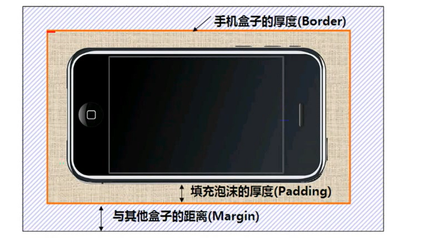

1991年1月，发行专辑《一起走过的日子》，专辑同名主打歌《一起走过的日子》获得十大劲歌金曲奖。
以及十大中文金曲奖 [132-133] ；2月，发行粤语专辑《爱不完》 [134] ；该专辑发行首日录音带的销量达到16万张，而激光唱片的销量则有7.2万张 [135] ；6月，发行国语专辑《我和我追逐的梦》；同年，获得十大劲歌金曲奖最受欢迎男歌手奖 [132] 。
1992年，在洛杉矶、旧金山等地举行美加巡回演唱会；9月，发行加入华纳唱片公司以后的首张专辑《真我的风采》；该专辑发行后销量达到40万张 [135] ；同年，在提前录制的央视春晚视频中，刘德华与毛阿敏、张雨生合唱歌曲《心中常驻芳华》 [136]
；此外，他还发行了专辑《谢谢你的爱》，同名主打歌曲《谢谢你的爱》获得第十六届十大中文金曲奖 [137] 。
1993年1月至2月，在香港红磡体育馆举行20场“真我的风采演唱会”；4月，推出加入飞碟唱片公司后的首张专辑《真情难收》，其中的主打歌曲《一辈子的错》由刘德华作词；11月，推出专辑粤语专辑《答案就是你》，专辑中的歌曲《永远寂寞》获得第16届十大中文金曲获奖 [137] 。
1994年，发行国语专辑《忘情水》，同名主打歌《忘情水》获得第17届十大中文金曲奖最受欢迎国语歌曲金奖以及第1届华语榜中榜Channel [V]中文Top 20榜中榜歌曲奖 [138-139] ；8月6日至25日，在香港红磡体育馆举行20场演唱会；11月25日，发行国语专辑《天意》；专辑中表达友情的主打歌曲《友谊历久一样浓》是刘德华个人填词的作品；同年，获得十大劲歌金曲奖最受欢迎男歌手奖。